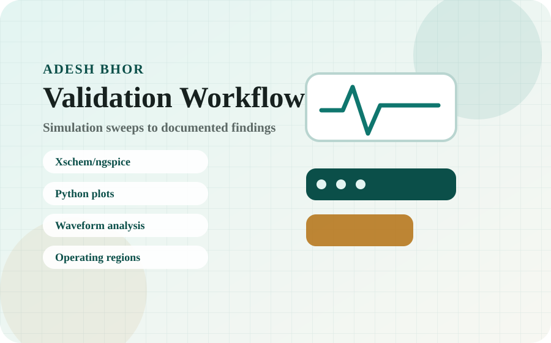
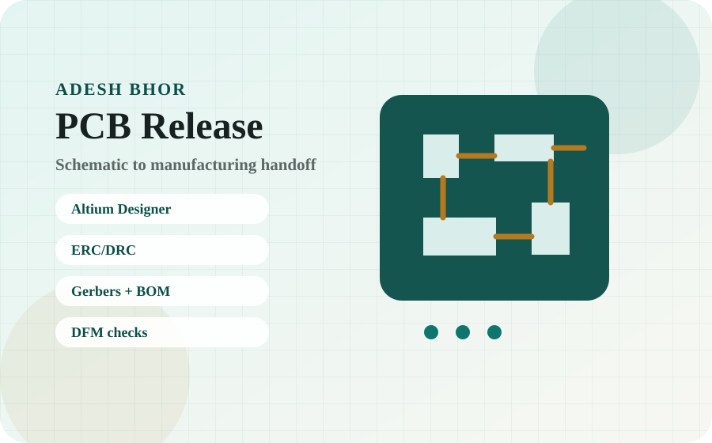
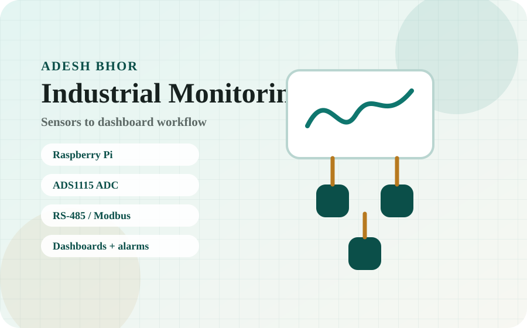
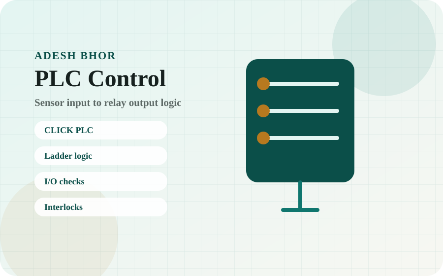
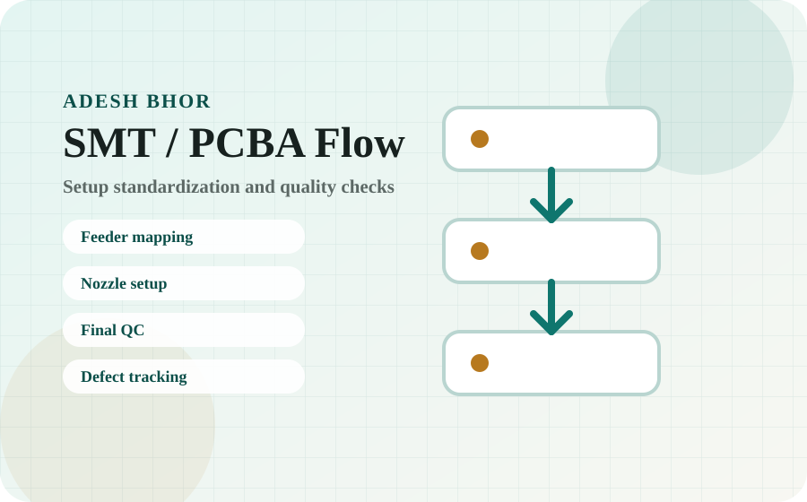
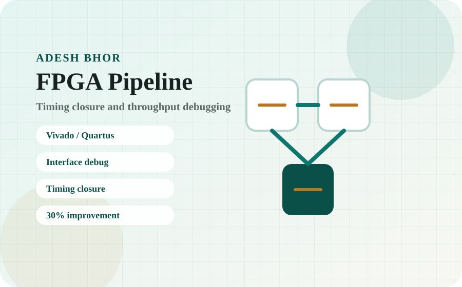
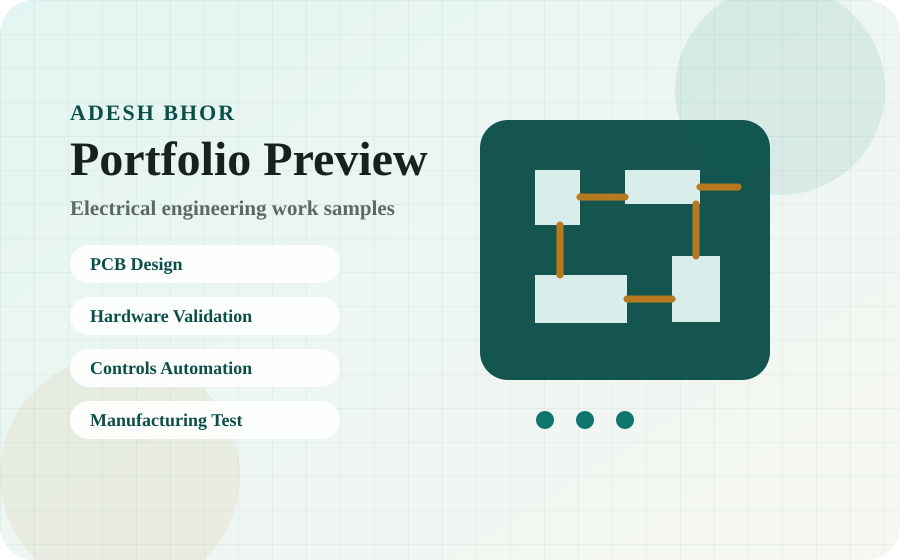

Electrical Engineering Portfolio · Dallas, TX · Open to relocation
Electrical Engineer: PCB Design, Hardware Validation, Controls & Manufacturing
M.S. Electrical Engineering graduate from the University of Oklahoma with hands-on experience in Altium PCB workflows, bench validation, industrial monitoring, PLC controls, Xschem/ngspice circuit simulation, and PCBA manufacturing support.
About
Practical engineering from circuit design to validation, automation, and manufacturing support.
I am an Electrical Engineering graduate with an M.S. from the University of Oklahoma and hands-on experience in PCB design, hardware test and validation, industrial controls automation, PCBA manufacturing support, and technical systems troubleshooting.
My work spans Altium Designer PCB workflows from schematic through manufacturing release, Xschem/ngspice simulation and waveform analysis, CLICK PLC ladder logic, RS-485/Modbus RTU sensor networks, JUKI RS-1R SMT setup optimization, and KACE/Jira/BeyondTrust endpoint support.
I bring a documentation-first approach: every project I work on should produce traceable, repeatable, and reviewable results. This portfolio is built for recruiters and hiring managers to quickly see what I have worked on, what tools I used, how I validated the work, and what improved.
Skills
Technical strengths organized by hiring need.
These are the areas I want recruiters to associate with my work: PCB design, hardware validation, controls, simulation, manufacturing support, and technical troubleshooting.
PCB Design
Altium Designer
Schematic capture
PCB layout
Custom symbols/footprints
Integrated libraries
ERC/DRC
Gerber/NC drill files
BOM
Pick-and-place files
STEP/3D outputs
DFM documentation
4-layer stackup planning
Mixed-signal grounding
Power/ground planes
Hardware Test & Validation
Board bring-up
Functional testing
Waveform analysis
Failure isolation
Root-cause analysis
Defect tracking
Corrective-action documentation
Test documentation
Python testbenches
Parameter sweeps
Lab Equipment
Oscilloscopes
Digital multimeters
Bench power supplies
Function generators
PCB/breadboard test setups
Soldering
SMT component support
Simulation / EDA
Xschem
ngspice
ASAP7 FinFET models
Python waveform post-processing
MATLAB
Transient simulation
Power/energy analysis
FPGA / Embedded
FPGA validation
Vivado
Quartus
Timing closure
Hardware/software interfaces
UART
SPI
I2C
Controls & Industrial
CLICK PLC
Ladder logic
Relay-based control
Discrete I/O wiring
Safety interlocks
RS-485
Modbus RTU
ADS1115 ADC
Sensor node validation
Dashboard alarms
Raspberry Pi
Programming & Data
Python
MATLAB
Streamlit
Plotly
Linux/CLI
Scripted automation
Data visualization
Manufacturing / PCBA
Prototype PCBA builds
SMT setup
JUKI RS-1R feeder/nozzle setup
In-process test
Final QC
QMS/5S
Defect documentation
IT / Service Delivery
KACE image deployment
Jira ticket tracking
BeyondTrust/Bomgar remote support
Endpoint troubleshooting
Windows/Linux
AV device support
User documentation
Experience & Education
Experience that supports PCB, hardware validation, controls, manufacturing, and technical systems roles.
Graduate Research Assistant · Electrical Engineering
University of Oklahoma
Built repeatable Xschem/ngspice circuit simulation workflows using ASAP7 FinFET models, Python waveform post-processing, and multi-variable parameter sweeps. Analyzed reset behavior, firing frequency, power, energy, and robustness for a hybrid LIF neuron thesis, while also resolving FPGA timing-closure and interface issues that improved image-classification throughput by 30%.
Graduate Teaching Assistant · Electronics Labs
University of Oklahoma
Guided students through electronics labs involving oscilloscopes, DMMs, bench power supplies, function generators, MOSFET/BJT switching circuits, PID-control labs, filters, 555 timers, LM324 comparators, safe measurement practices, and structured circuit debugging.
Electronics Manufacturing Intern
GM Electronics
Supported prototype PCBA builds, in-process testing, final QC, defect tracking, and corrective-action documentation. Standardized SMT setup practices for a JUKI RS-1R placement machine, including feeder mapping, nozzle/component setup, and vision-setting workflows in a QMS/5S environment, contributing to approximately 30,000 additional placements per day and an 11% daily production efficiency improvement.
Product Design Intern
Tom Love Innovation Hub / Irani Center
Led 60+ user and stakeholder interviews, validation testing, and electromechanical prototyping to improve prototype accuracy by 40% and support manufacturability decisions based on sensor limitations, user feedback, and test results.
Technology Assistant · Library Technology Platform
University of Oklahoma
Supported 1,000+ campus devices across endpoint deployment, troubleshooting, AV support, and user-facing technology service requests. Used KACE image deployment, Jira ticket tracking, and BeyondTrust/Bomgar remote support workflows, improving imaging efficiency by 50x and reducing device setup time by 90%.
M.S. Electrical Engineering · Graduated May 2026
GPA 3.8 · Thesis research in CMOS neuromorphic circuit simulation
Thesis: A Hybrid Leaky Integrate-and-Fire Neuron with Tunable Reset Behavior in 7 nm Fin Field-Effect Transistor Technology. Focused on Xschem/ngspice simulation, ASAP7 FinFET models, reset behavior, frequency, energy per spike, static power, and robustness analysis.
B.S. Electrical Engineering
GPA 3.56
Thesis Research
Hybrid LIF neuron simulation and reset-aware circuit validation.
M.S. thesis research focused on compact CMOS neuromorphic neuron design, Xschem/ngspice simulation, ASAP7 FinFET models, Python waveform analysis, and reset/frequency/energy tradeoffs.

A Hybrid Leaky Integrate-and-Fire Neuron with Tunable Reset Behavior in 7 nm FinFET Technology
Designed and simulated a compact Besrour-derived hybrid LIF neuron with an added reset/timing branch. The workflow compared the hybrid neuron against a baseline design using reset behavior, firing frequency, dynamic energy per spike, static power, and robustness.
Quick facts
- Tools: Xschem, ngspice, ASAP7 FinFET models, Python, MATLAB.
- Validation: transient simulation, parameter sweeps, waveform post-processing, frequency and energy analysis.
- Result: identified operating tradeoffs between performance-oriented and robustness-oriented reset behavior.
- Recruiter signal: repeatable simulation, waveform analysis, design tradeoff documentation, and research-grade technical communication.
Thesis PDF and selected waveform/schematic visuals will be added here after final upload.
Projects
Project snapshots with real engineering proof.
Filter by role family. Each project includes tools, validation method, result, and a technical visual. Real project photos and screenshots can be added later without changing the structure.

PCB Design & Manufacturing Release Package
Completed a full PCB design workflow in Altium Designer: schematic capture, custom symbol and footprint libraries, component placement, manual routing, ERC/DRC verification, and manufacturing package generation.
Quick facts
- Tools: Altium Designer, schematic capture, PCB layout, ERC/DRC, Gerber/NC drill files, BOM, pick-and-place, STEP/3D, DFM.
- Technical focus: 4-layer stackup planning, power/ground planes, mixed-signal grounding, and EMI/EMC-aware routing.
- Validation: design-rule checks, output-job consistency review, manufacturing handoff review, and DFM-oriented documentation.
- Recruiter signal: practical board-design workflow from schematic to fabrication/assembly release.

Industrial Air Compressor Monitoring System
Designed and deployed a distributed industrial monitoring system using Raspberry Pi, ADS1115 ADC interfaces, RS-485 wiring, Modbus RTU communication, and a Streamlit/Plotly dashboard with alarm thresholds.
Quick facts
- Tools: Raspberry Pi, Python, ADS1115 ADC, RS-485, Modbus RTU, Streamlit, Plotly.
- Validation: sensor node checks, Modbus RTU communication verification, dashboard testing, alarm threshold testing, and deployment documentation.
- Result: reduced compressor downtime by 20% through better operator visibility and documented troubleshooting workflows.
- Recruiter signal: industrial monitoring, sensor integration, dashboard alarms, communication validation, and field-ready documentation.
Hybrid LIF Neuron Thesis: Automated Circuit Simulation & Validation Workflow
Built a repeatable simulation and validation workflow for a 7 nm FinFET CMOS hybrid LIF neuron using Xschem, ngspice, ASAP7 predictive FinFET models, Python waveform post-processing, and MATLAB.
Quick facts
- Tools: Xschem, ngspice, ASAP7 FinFET models, Python, MATLAB.
- Validation: transient simulation, parameter sweeps, waveform comparison, failure-mode boundary identification, and operating-region mapping.
- Result: evaluated reset behavior, frequency, energy per spike, static power, and robustness across multiple operating variables.
- Recruiter signal: repeatable simulation, waveform analysis, design tradeoff documentation, and technical communication.

Autonomous Plant Care PLC Control System
Programmed and validated CLICK PLC ladder logic for a sensor-driven automated plant care system with relay-based output control, I/O mapping, wiring validation, interlocks, and commissioning documentation.
Quick facts
- Tools: CLICK PLC, ladder logic, relays, discrete sensors, wiring validation.
- Validation: I/O mapping, wiring checks, relay output response verification, interlock testing, and commissioning documentation.
- Result: reliable sensor-driven automation with validated output behavior.
- Recruiter signal: PLC fundamentals, discrete I/O, relay control, wiring checks, and structured controls validation.

SMT Setup Standardization & PCBA Quality Flow
Supported prototype PCBA builds and standardized SMT setup practices for a JUKI RS-1R placement machine, including feeder mapping, nozzle/component setup, changeover documentation, in-process testing, final QC, defect tracking, and corrective-action support.
Quick facts
- Tools/process: JUKI RS-1R, prototype PCBA builds, SMT setup, in-process test, final QC, defect tracking, QMS/5S.
- Result: contributed to approximately 30,000 additional placements per day, 1 hour/day saved, and an 11% daily production efficiency improvement.
- Validation: setup review, quality checks, defect documentation, and corrective-action tracking.
- Recruiter signal: manufacturing-aware engineering, quality traceability, process documentation, and PCBA production support.

FPGA Throughput Optimization
Resolved timing-closure, implementation, and hardware/software interface issues during FPGA validation for an image-classification pipeline, improving real-time throughput by 30%.
Quick facts
- Tools: Vivado, Quartus, FPGA validation workflows, hardware/software interface debugging.
- Validation: timing-closure review, implementation debugging, pipeline bottleneck analysis, and throughput comparison.
- Result: improved real-time image-classification throughput by 30%.
- Recruiter signal: digital validation, timing analysis, implementation debugging, and performance improvement.

Endpoint Deployment & Technical Support Workflow
Supported large-scale campus endpoint deployment and troubleshooting workflows using KACE image deployment, Jira ticket tracking, and BeyondTrust/Bomgar remote support across 1,000+ devices.
Quick facts
- Tools: KACE, Jira, BeyondTrust/Bomgar, Windows/Linux, endpoint support, AV troubleshooting.
- Result: improved imaging efficiency by 50x and reduced device setup time by 90%.
- Validation: deployment checks, ticket tracking, remote support documentation, and user-facing troubleshooting.
- Recruiter signal: technical systems support, documentation, stakeholder communication, and service delivery execution.
Resume
One clear resume for recruiters. Detailed project proof below it.
To keep the website simple and credible, I provide one main public resume here. My portfolio sections give deeper technical evidence across PCB design, hardware validation, controls, manufacturing, research, and IT systems.
Main Electrical Engineering Resume
Best starting point for recruiters reviewing me for electrical engineering, PCB design, hardware validation, controls/automation, manufacturing/test, and technical systems roles.
Download ResumeRole-specific fit
For specific job applications, I tailor the same core experience toward the job family. The public portfolio keeps the story consistent while still showing the depth recruiters need to evaluate fit.
Review Project EvidenceContact
Open to PCB design, hardware validation, controls, manufacturing/test, and electrical engineering roles.
The fastest way to reach me is email. I am based in Dallas, TX, open to relocation, and interested in engineering roles where I can contribute to design, validation, documentation, troubleshooting, and manufacturing-aware execution.